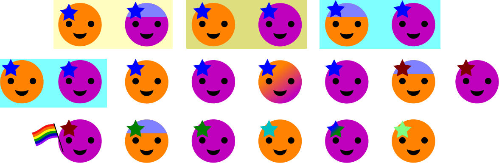

Diversity Works
Tech Companies have a notorious lack of diversity problem.
This may look familiar.
Why should we care?
We make products for everyone.
20 People
Representing the US adult population
51% Female, 49% Male, 0.3% Trans/Non-Binary

Census Bureaus March 2015 Current Population Survey / June–September 2012 Gallup poll
63.7% White

16.3% Hispanic or Latino

12.2% Black

4.7% Asian

1.9% Two or more races

0.9% Native American/Alaskan/Hawaiian

3.4% Identify as LGB
22.2% Report Having a Disability

CDC Prevalence of Disability and Disability Type Among Adults — United States, 2013
10% age 19 to 25

CDC Prevalence of Disability and Disability Type Among Adults — United States, 2013
12% age 26 to 34

CDC Prevalence of Disability and Disability Type Among Adults — United States, 2013
13% age 35 to 44
CDC Prevalence of Disability and Disability Type Among Adults — United States, 2013
14% age 45 to 54

CDC Prevalence of Disability and Disability Type Among Adults — United States, 2013
14% age 55 to 64

CDC Prevalence of Disability and Disability Type Among Adults — United States, 2013
15% age 65+

CDC Prevalence of Disability and Disability Type Among Adults — United States, 2013
Our Consumers
A conservative estimate
Research proves diversity makes companies better.
Diversity is crucial to encouraging different perspectives and ideas that foster innovation.
"Global Diversity and Inclusion: Fostering Innovation Through a Diverse Workforce."
Forbes | Insights, July 2011
When selecting a problem-solving team from a diverse population of intelligent agents, a team of randomly selected agents outperforms a team comprised of the best-performing agents.
Lu Hong and Scott E. Page "Groups of diverse problem solvers can outperform groups of high-ability problem solvers."
Michigan Business School and Complex Systems, University of Michigan; and Department of Finance, Loyola University, September 2004
Companies with diverse executive boards enjoy significantly higher earnings and returns on equity.
Thomas Barta, Markus Kleiner, and Tilo Neumann "Is there a payoff from top-team diversity?"
McKinsey Quarterly, April 2012
We’ve found that when at least one member of a team has traits in common with the end user, the entire team better understands that user.
Sylvia Ann HewlettMelinda MarshallLaura Sherbin "How Diversity Can Drive Innovation"
Harvard Business Review, December 2013
Companies with diverse executive boards enjoy significantly higher earnings and returns on equity.
Thomas Barta, Markus Kleiner, and Tilo Neumann "Is there a payoff from top-team diversity?"
McKinsey Quarterly, April 2012